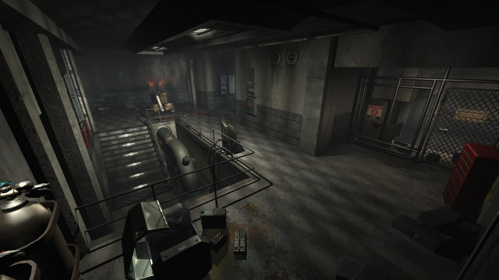
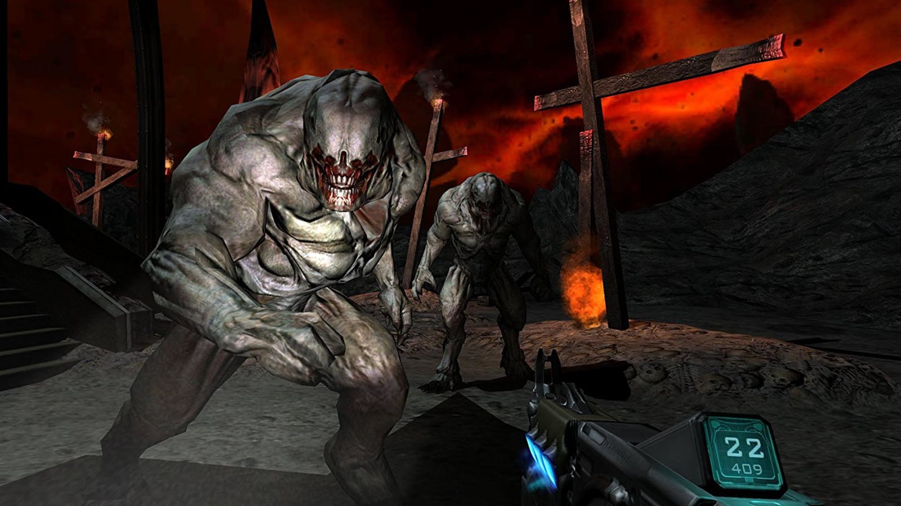
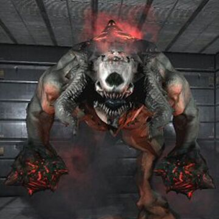

Riassunto
Doom 3 è un videogioco sparatutto in prima persona (FPS), del genere
horror/fantascientifico, sviluppato da id Software e pubblicato da ActiVision.
Il gioco è ambientato tra il 15 e il 16 Novembre dell'anno 2145 su Marte, Doom 3 è un gioco incentrato sull'horror, a differenza dei precedenti titoli ricchi di azione.
Doom 3 ha subito una lunga fase di progettazione e testing, iniziata nel 2000, con una buona dimostrazione all' E3 nel 2002, 2003, il gioco è stato infine rilasciato nell'Agosto del 2004.
Il gioco è stato sviluppato per il sistema operativo Windows e poi ha subito l'operazione di porting verso Linux nel 2004, cinque mesi dopo è stato rilasciato per Mac OS
e per la console Xbox (co-sviluppato da Vicarious Visions).
Tale versione è graficamente simile, ma meno dettagliata, dell'originale e supporta la modalità a due giocatori cooperativa online.
Esiste poi un'espansione Doom 3: Resurrection of Evil, sviluppata da Nerve Software
e co-sviluppata da id Software, che è stata rilasciata nell'Aprile 2005, anch'essa portata poi per Xbox venne rilasciata mesi dopo.
Un film di Doom vagamente basato sul franchise, è stato rilasciato circa sei mesi dopo, il 21 ottobre 2005.
Doom 3 si concentra su un gameplay più lento e metodico rispetto al "run and gun" dei suoi predecessori.
Ha ricevuto un'opinione positiva da parte della critica per le sue atmosfere paurose e la sua grafica rivoluzionaria, ma è stato altrettanto criticato principalmente per il suo gameplay, che essendo più lento, alla lunga stancava, e per i suoi dettagli horror ricchi di cliché.
Trama
Prima degli eventi del gioco, il progetto originale dell'UAC, era quello di esplorare il
pianeta rosso per trasformarlo in un habitat ospitale per i terrestri, viene così creato un dispositivo denominato Hydrocon,
che trasforma l'ossido di ferro (il principale minerale presente su Marte), in ossigeno e idrogeno, andando così a creare un'atmosfera che permetta lo sviluppo di vita sul pianeta.
Iniziano così i lavori per la costruzione di un insediamento umano detto Mars City, durante gli scavi vengono alla luce però antichi
artefatti e strutture che rivelano l'esistenza di un'antica civiltà marziana.
Come risposta l' UAC modifica il progetto iniziale trasformandolo in un vero e proprio sito di scavi archeologico
con laboratori e strutture disseminate in differenti posizioni del pianeta, il punto di rottura però, avviene nel momento in cui avviene la scoperta di un artefatto, nome in codice U1,
detto anche il cubo dell'anima, assieme ad alcune tavole di pietra scritte dall'antica civiltà misteriosa.
Queste tavole contengono le informazioni tecniche riguardo un'avanzata tecnologia di teletrasporto, il che cambia irreparabilmente le sorti dello sviluppo tecnologico umano.
Con la supervisione dei più brillante scienziato dell' UAC, il creatore dell'Hydrocon,
Dr. Malcolm Betruger l' UAC inizia lo sviluppo di tale tecnologia, seguendo le antiche informazioni scritte sulle tavole.
Esso avviene in una locazione segreta conosciuta come laboratorio Delta, nello stesso momento lo scienziato Pierce Rogers, che era a capo delle operazioni archeologiche,
riesce nella traduzione dei glifi riportati sulle suddette tavole di pietra, che avvertivano chiunque le avesse ritrovate sui rischi riguardanti l'uso di tale tecnologia, i quali sono stati la causa dell'estinzione della civiltà marziana.

Una volta attivato, il teletrasporto si rivela non essere propriamente tale, in quanto, funziona come un portale per un'altra dimensione.
Dopo aver effettuato svariati test con videocamere e cavie non umane (animali), gli scienziati scoprono che questa nuova dimensione era dominata da orribili creature in un ambiente dove il caldo soffocante era perenne.
Tutto il personale scientifico inizia al più presto l'esplorazione di questa nuova dimensione, chiunque tornasse però riportava gravi danni psicologici che portavano sempre i soggetti ad un' inesorabile morte.
Quando questi test venivano effettuati, nel laboratorio 3 si stava già provvedendo alla traduzione del monito scritto sulle tavole, ma quando si scoprì la verità, era già troppo tardi.
Il progetto teletrasporto era già concentrato sull'esplorazione e lo sfruttamento delle scoperte dell'altra dimensione, come per esempio riportare in vita specie morte e riuscire ad affrontare lunghi viaggi nella dimensione.
Non molto tempo dopo, l'intera base di Marte ha iniziato ad avere strani problemi con la luce e l'energia, diversi membri del personale hanno segnalato situazioni spaventose, chiedendo di essere trasferiti al largo di Marte.
Betruger stesso divenne ossessionato da questa nuova dimensione, venendo corrotto dal potere e dall'autorità che deteneva, usandolo per controllare Mars City
e nascondere gli orrori delle sue scoperte dalla Terra.
Alcuni scienziati del laboratorio Delta come Ian McCormick e Jonathan Ishii ipotizzavano da tempo che la nuova dimensione scoperta, fosse infatti, l'inferno stesso,
ma erano troppo spaventati per inviare tali teorie alla Terra.
Una scienziata però, chiamata Dr Elizabeth McNeil, sfida l'autorità di Betruger
chiamando il consiglio dell' UAC e chiedendo di fermare le ricerche del laboratorio Delta.
Alla scoperta di tali eventi Betruger riesce ad espellere la dottoressa dal pianeta, e poco dopo, entra lui stesso nel portale.
Al suo ritorno però era una persona diversa, un paio di giorni dopo infatti, il consiglio dell' UAC
nomina l'avvocato e consigliere della società Elliot Swann e la sua guardia del corpo Jack Campbell per avere un responso sui danni dell'intera operazione su Marte.
In data 15 Novembre 2145, arrivano a destinazione Elliot e Jack a bordo dell'astronave Darkstar.
Ancora una volta ci ritroviamo nei panni del marine senza nome, ora diventato caporale, arrivato sul pianeta a bordo della Darkstar.
Il nostro protagonista infatti si trova li in quanto avrebbe dovuto sostituire un altro militare morto durante le operazioni.
La sua missione è quella di ritrovare lo scienziato Jonathan Ishii che risulta scomparso, visto per l'ultima volta nel centro comunicazioni.
Nel frattempo Swann e Campbell discutono animatamente con Betruger riguardo i numerosi incidenti avvenuti nella base,
come per esempio il personale spaventato e le varie voci su ciò che sta accadendo al laboratorio Delta, a tali accuse Betruger
risponde presto accadranno cose stupefacenti e se ne va di scena.
Una volta ritrovato Ishii, egli balbetta qualcosa riguardo l'avvertire immediatamente il laboratorio Delta, subito dopo, l'inferno si scatena
attraverso il portale principale, dal quale viene emesso un fortissimo impulso elettromagnetico che attraversa l'intera base, disegnando nell'ambiente diversi pentacoli luminosi,
trasformando il 90% del personale in zombie, coinvolgendo anche Ishii.
Il personale rimanente verrà poi sterminato dalle orde demoniache che infestano la base, tranne un manipolo di uomini denominato Bravo Team.
Il nostro protagonista ha quindi il compito di riunirsi con il Bravo Team per lanciare un segnale di soccorso alla flotta spaziale.
Quando il marine prende l'ascensore per la sezione amministrativa, origlia una conversazione tra Swann e Betruger
il quale mantiene un atteggiamento pacato, egli sostiene infatti che la situazione è sotto controllo.
Intuendo che Betruger è in qualche modo collegato all'invasione Swann e Campbell si dirigono verso il centro comunicazioni per prevenire l'arrivo di chiunque altro sul pianeta.

Lo sforzo del marine per riunirsi con il Bravo Team risulta vano in quanto l'inferno inizia a colpire duro, uccidendo o impadronendosi dell'anima dell' intera popolazione umana presente su Marte,
lasciando in vita solo pochi umani che si barricano all'interno dell'area più sicura che riescono a trovare.
Attraversando la sezione amministrativa e il laboratorio Alpha il marine incontra molti zombi e demoni nemici, capitanati da un demone più potente denominato Vagary.
Nel frattempo il Bravo Team viene attaccato e sterminato da un gruppo di diavoletti, ad eccezione di un unico sopravvissuto che possiede una carta di soccorso che stringe nel pungo prima di morire.
Quando il protagonista arriva nel luogo del massacro, egli riceve tale tessera dall'unico sopravvissuto, che sarà ucciso da uno spettro poco dopo.
Arrivato così al centro comunicazioni il marine però Campbell ha distrutto la console con la famosissima BFG 9000.
L'unica soluzione è trasmettere la richiesta di soccorso direttamente dalla torre satellitare, in quel preciso momento Swann chiede al nostro eroe di non inviare tale richiesta in quanto nessuno è in grado di capire cosa stia succedendo all'interno della base,
ci si trova così davanti ad un dubbio morale gigantesco....
A prescindere da ciò il nostro protagonista ha il compito di accedere al laboratorio Delta e fermare l'invasione, dopo aver ricevuto l'autorizzazione di sicurezza per accedervi,
egli viene intrappolato nel centro di smaltimento rifiuti per mano di Betruger stesso.
Betruger rivela al nostro eroe il suo piano, dicendo chiaramente di controllare le orde demoniache e che avrebbe già inviato una richiesta d'aiuto
alla flotta stellare, con l'unico scopo di dirottare le astronavi per attaccare il pianeta Terra.
Dopodichè usa i suoi nuovi poteri, trasformando i militari feriti nel suo squadrone personale, dopo essere scappato dal centro smaltimento rifiuti il marine senza nome
riesce ad arrivare all'entrata del laboratorio Delta.
Una volta entratovi egli trova McCormick che gli spiega tutto il contesto antecedente al suo arrivo: gli esperimenti, l'invasione...
e aiuta il protagonista a teletrasportarsi nel centro di ricerca del settore Delta. McCormick rivela anche che quando l'invasione ha avuto inizio,
Betruger era andato all'inferno in possesso del cubo dell'anima, egli crede infatti che sia proprio quell'artefatto la chiave per scatenare o terminare l'espansione infernale.
Dopo essere arrivato al centro di ricerca, il protagonista scopre come il settore Delta sia quello che abbia subito maggiormente le conseguenze degli attacchi infernali,
messaggi insanguinati e cadaveri ricoprono le pareti e il pavimento, una volta superati, si trova davanti al portale principale, e proprio in quel momento, Betruger
lo attiva inviando due Hell Knights a fermarlo, una volta uccisi, il protagonista entra nel portale arrivando così, all'inferno.

Arrivato lì il protagonista si ritroverà a combattere svariate legioni infernali, senza riuscire a trovare il cubo dell'anima, protetto dal guardiano dell'inferno stesso.
Dopo averlo combattuto ed uscitone vincitore, il marine prende possesso dell'artefatto e ritorna su Marte.
Poco dopo il suo ritorno, egli viene schernito da Betruger, che rivela l'esistenza di un altro portale, che sarebbe in grado di
trasportare milioni di creature demoniache all'interno del nostro universo, tale portale viene chiamato Hell Gate.
Dopo aver attraversato nuovamente alcuni settori del complesso marziano, il marine si ritrova nel settore 3, dove incontra l'archeologo Pierce Rogers,
il quale spiega come l'antica civiltà marziana sia riuscita ad unire scienza e religione al fine di creare un portale per viaggiare attraverso il sistema solare, Terra compresa.
Tale portale però ha solamente aperto il cancello infernale e scatenato un'invasione.
Gli antichi in un ultimo atto di sacrificio, costruirono il cubo, alimentandolo con le loro stesse anime, dopodichè esso venne affidato al più potente guerriero marziano per cacciare i demoni da dove sono venuti.
I restanti abitanti del pianeta seppellirono il loro guerriero con il cubo e qualche tavola di pietra con incisi degli avvertimenti per i futuri organismi che avrebbero ritrovato tale artefatto.
Dal momento in cui il pianeta era divenuto desolato, gli antichi hanno migrato verso altri pianeti, questo è il motivo per cui Rogers sostiene che gli umani siano discendenti diretti di tale civiltà.
Quando il Marine entra nella base originale di Marte è già martedì 16 novembre e raggiunge le Caverne del sito archeologico all'alba.
Dopo aver ripristinato il controllo dell'ascensore principale, il Marine lo porta ulteriormente sottoterra fino alle strutture degli antichi.
Combattendo contro i demoni, il Marine raggiunge il sito di scavo dell'antica civiltà. Anni di terremoti e il tempo passato stanno iniziando a far crollare
la struttura.
Dopo aver combattuto qualunque demone si intromettesse nel suo cammino, il Marine finalmente raggiunge il
Sito di scavo primario e scopre di più sul cubo dell'anima grazie ad un video informativo dell' UAC trasmesso su dei tablet. Il Marine scopre anche una sezione dell'
inferno che si è infiltrato nel sottosuolo marziano e nelle viscere di questo pianeta. Lì, incontra l'invulnerabile Cyberdemon,
che era a guardia dell' Hell Gate, un enorme portale per l'inferno. Usando il cubo dell'anima, il Marine sconfigge il Cyberdemon e il cubo stesso
sigilla per sempre il portale.
Successivamente, la squadra marine di ricognizione Zulu, arriva a Mars City per mettere al sicuro la base,
ritrovano l'unico marine sopravvissuto al laboratorio Delta, e trovano anche il cadavere di Swann morto per le ferite riportate,
anch'essi si domandano dove si trovi il dottor Betruger.
Il gioco finisce all'inferno, rivelando che ora Betruger è divenuto un demone dalle fattezze di un drago chiamato Maledict.